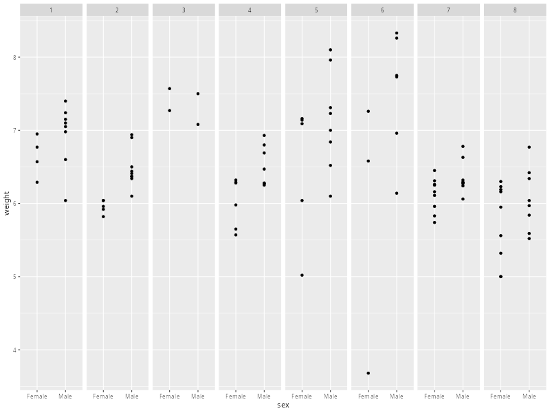

Implementing the Model in R#
…
Collapsing to Mixed-effects Form#
… So, at present, our two-level model is
\[\begin{split}
\begin{alignat*}{1}
\text{Level 1:} \\
y^{(k)}_{ij} &= \mu^{(k)} + \alpha^{(k)}_{j} + \eta^{(k)}_{ij} \\
\quad \\
\text{Level 2:} \\
\mu^{(k)} &= \mu + \gamma_{l} + \xi^{(k)} \\
\alpha^{(k)}_{j} &= \alpha_{j} + (\alpha\gamma)_{jl} + \phi^{(k)}_{j}
\end{alignat*}
\end{split}\]
which we can perhaps make a bit clearer by labelling the terms explicitly
\[\begin{split}
\begin{alignat*}{1}
\text{Level 1:} \\
\text{weight}^{(k)}_{ij} &= \text{mean}^{(k)} + \text{sex}^{(k)}_{j} + \eta^{(k)}_{ij} \\
\quad \\
\text{Level 2:} \\
\text{mean}^{(k)} &= \text{mean} + \text{treatment}_{l} + \xi^{(k)} \\
\text{sex}^{(k)}_{j} &= \text{sex}_{j} + (\text{sex} \times \text{treatment})_{jl} + \phi^{(k)}_{j}
\end{alignat*}
\end{split}\]
Remember, any term with superscript \((k)\) is defined specifically in relation to litter \(k\) any term without superscript \((k)\) is defined in terms of the population as a whole. …
\[
y^{(k)}_{ij} = \mu + \alpha_{j} + \gamma_{l} + (\alpha\gamma)_{jl} + \xi^{(k)} + \phi^{(k)}_{j} + \eta^{(k)}_{ij}
\]
…
\[
y_{ijk} = \mu + \alpha_{j} + \gamma_{l} + (\alpha\gamma)_{jl} + \xi_{k} + \phi_{jk} + \eta_{ijk}
\]
Where we end up with what is essentially a two-way ANOVA model with three error terms.
We can now collapse these levels together to give the mixed-effects specification.
Implementation Using lme()#
library(nlme)
lme.ratpup.1 <- lme(fixed = weight ~ treatment + sex + sex:treatment, # fixed-effects (mean function)
random = ~ 1 + sex|litter, # random-effects (variance function)
data = ratpup) # data (long-format)
summary(lme.ratpup.1)
Linear mixed-effects model fit by REML
Data: ratpup
AIC BIC logLik
438.799 476.3564 -209.3995
Random effects:
Formula: ~1 + sex | litter
Structure: General positive-definite, Log-Cholesky parametrization
StdDev Corr
(Intercept) 0.5019186 (Intr)
sexMale 0.1554335 0.888
Residual 0.4005464
Fixed effects: weight ~ treatment + sex + sex:treatment
Value Std.Error DF t-value p-value
(Intercept) 6.200295 0.1685193 292 36.79278 0.0000
treatmentHigh -0.293458 0.2647520 24 -1.10843 0.2787
treatmentLow -0.315255 0.2376438 24 -1.32658 0.1971
sexMale 0.441064 0.0878297 292 5.02181 0.0000
treatmentHigh:sexMale -0.083920 0.1529263 292 -0.54876 0.5836
treatmentLow:sexMale -0.077938 0.1272381 292 -0.61253 0.5407
Correlation:
(Intr) trtmnH trtmnL sexMal trtH:M
treatmentHigh -0.637
treatmentLow -0.709 0.451
sexMale 0.262 -0.167 -0.186
treatmentHigh:sexMale -0.151 0.200 0.107 -0.574
treatmentLow:sexMale -0.181 0.115 0.277 -0.690 0.396
Standardized Within-Group Residuals:
Min Q1 Med Q3 Max
-7.26679495 -0.48614771 -0.01516592 0.55664433 2.81749336
Number of Observations: 322
Number of Groups: 27
Visualising the Model#
library(ggplot2)
litters.to.plot <- as.character(seq(1,8)) # select litters to plot
ratpup.plot <- ratpup[ratpup$litter %in% litters.to.plot, ] # subset rows by litter labels
ggplot(ratpup.plot, aes(x=sex, y=weight)) +
geom_point() +
geom_smooth() +
facet_grid(~litter)

`geom_smooth()` using method = 'loess' and formula = 'y ~ x'